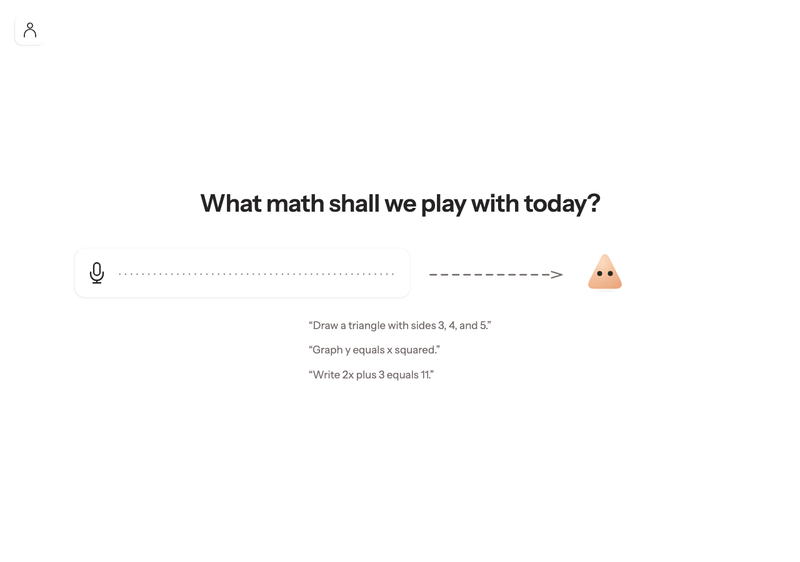
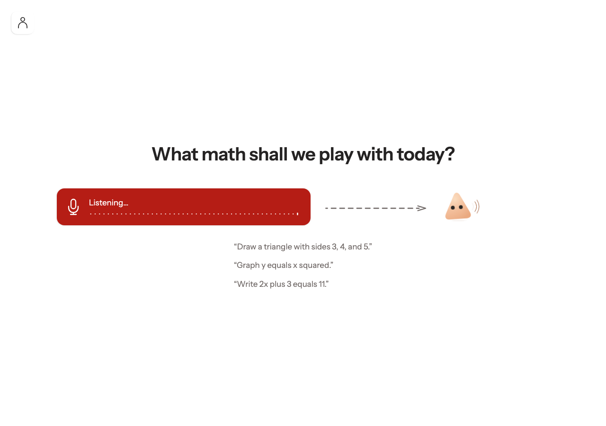
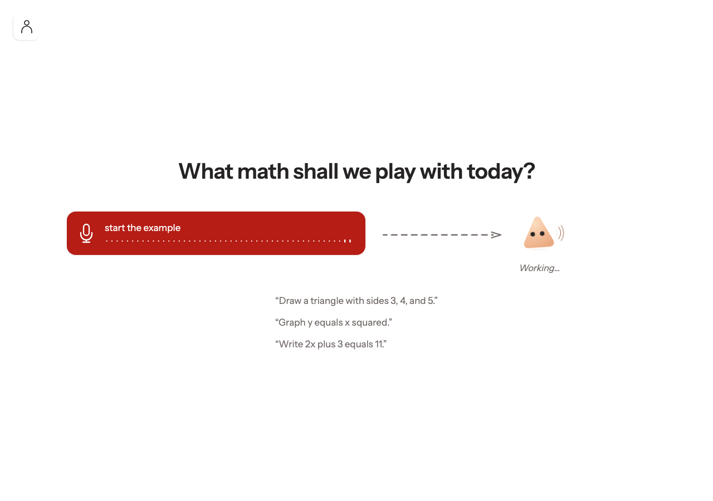
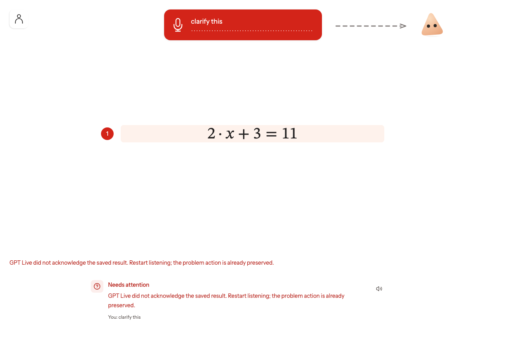

<!doctype html><html lang="en"><meta charset="utf-8"><meta name="viewport" content="width=device-width"><title>Pico and confetti browser verification</title><style>body{font:18px/1.6 system-ui;margin:40px auto;max-width:1200px;padding:0 24px;color:#292725;background:#fff9f5}h1{line-height:1.2}figure{margin:32px 0;background:white;padding:24px;border-radius:16px}img{max-width:100%;height:auto;display:block;max-height:750px;object-fit:contain;object-position:left}figcaption{margin-top:16px}li{margin:8px 0}a{color:#9b392e}</style><h1>Pico and confetti browser verification</h1><p>Failed · Local Vinext app; actual applyCloudOperation and exact completion service; synthetic voice transport and isolated in-memory storage. No live provider or student data.</p><p>Base revision 93a614ffb52616ddd6a8b9cd22b042de423c2c39; uncommitted implementation under test. Desktop 1280×900 and narrow 390×844.</p><p>desktop: pending and expressions: waitFor: Timeout 12000ms exceeded.
Call log:
  - waiting for locator('.pico[data-attention=&quot;clarifying&quot;]') to be visible
</p><ul><li>desktop: idle, listening, simultaneous playback, and immediate interruption verified.</li></ul><figure><a href="desktop-01-ready.png"></a><figcaption>1280×900: approved Soft peak, matching eyes, no idle animation.</figcaption></figure><figure><a href="desktop-02-listening.png"></a><figcaption>Listening lean and input arrow; no speaking waves.</figcaption></figure><figure><a href="desktop-03-speaking.png"></a><figcaption>Listening and audible playback overlap; outward waves are separate from the input waveform.</figcaption></figure><figure><a href="desktop-04-overlap.png"></a><figcaption>Backend working, microphone listening, and speaking remain independent.</figcaption></figure><figure><a href="desktop-failure.png"></a><figcaption>desktop: pending and expressions: TimeoutError: waitFor: Timeout 12000ms exceeded.
Call log:
  - waiting for locator('.pico[data-attention=&quot;clarifying&quot;]') to be visible
</figcaption></figure></html>